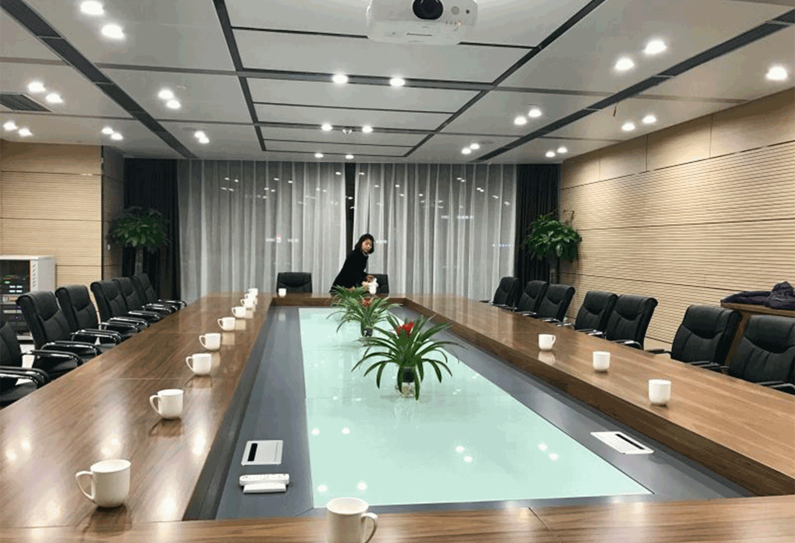
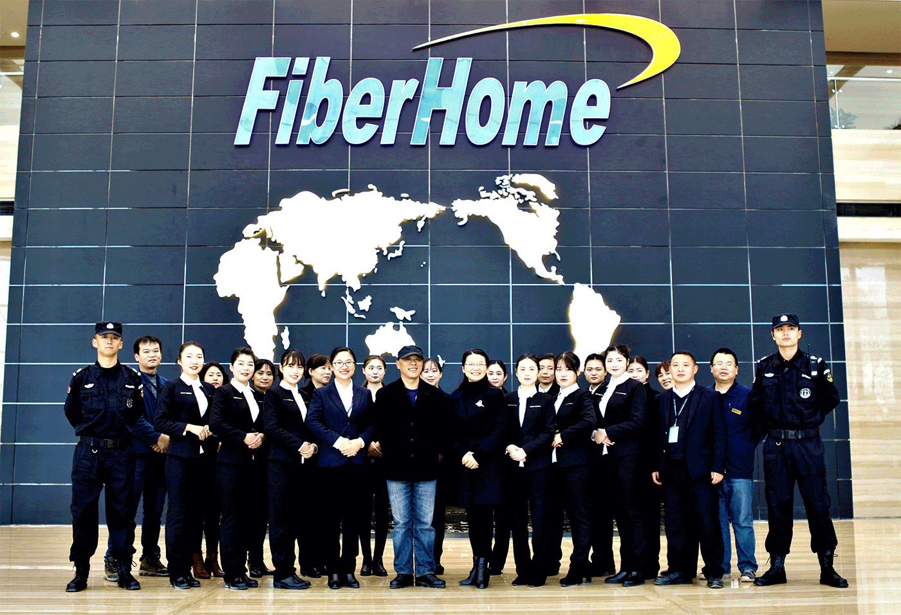
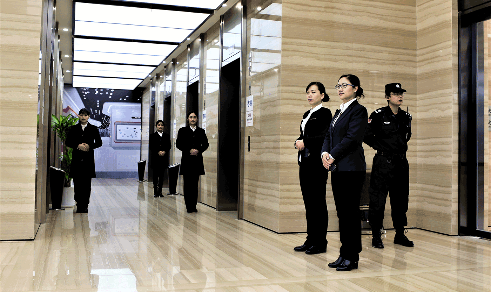

会务服务
按业主方提前约定的会议服务要求，
进行相应会议场地准备、资料准备、安保系统布设、设施设备调测、茶点服务、与会人员迎送等。


管家服务
对于园区面积大，每栋楼入住人员多，楼栋之间距离较远的，园区设置管家服务，以提升服务品质。
管家为区域第一联系人，也是区域服务质量第一把关人。
管家根据受服务人群的特点设计服务模式，如对高端决策人群，设计开展无打扰服务；
对科技研发人群设计开展具有创新与活力的文化服务；
根据园区入住人员体检大数据，与餐饮部设计适合健康需求的供餐服务等。